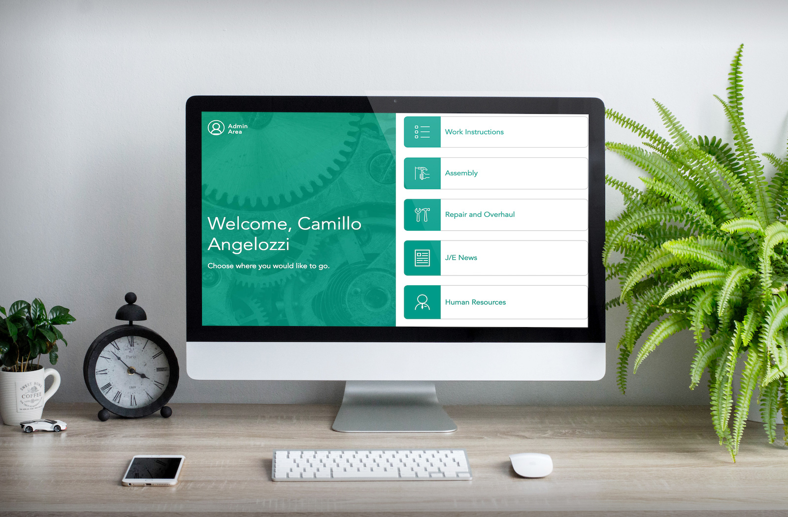
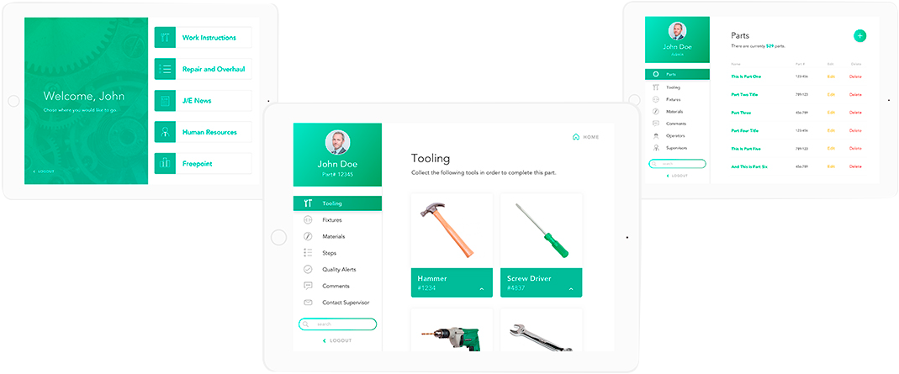
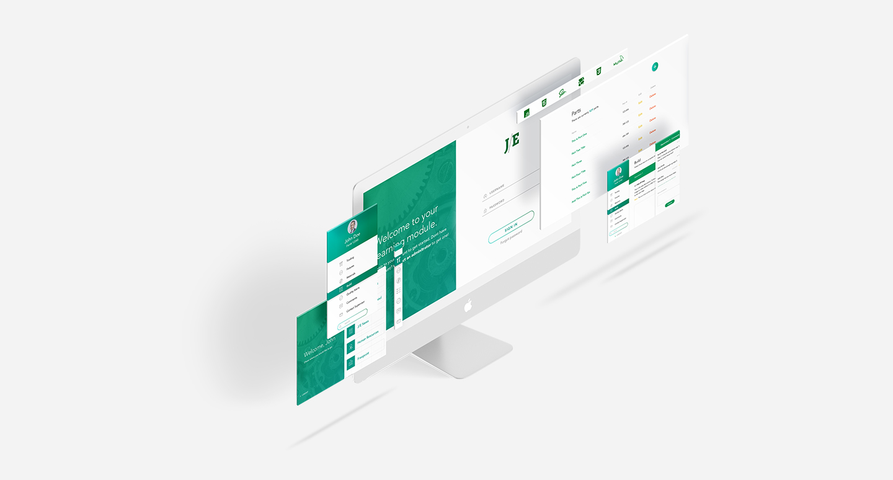

je_bearing Intro
ABOUT
The Problem
JE Bearing is a Southwestern Ontario company that builds, fixes, and improves a wide variety of machined parts, which are used to make their client's existing workflow more cost effective, time efficient, and sustainable. The company has complex, multi-step manufacturing workflows that need to be managed and maintained. Their paper-based communication and data organization system is inefficient and out of date, making it hard for employees to access information and communicate with one another without work disruptions.
Proposed Solution
The company approached the Reactr Team at Fanshawe College to design, build and implement a Web-based Online Industrial Training Application for worker training, data reference, and communication, that will mitigate a number of issues that are specific to JE Bearing's workplace environment.
Outcome
The application, already in Phase Two, is accessible on a tablet at each work station where workers can log in, search for the jobs they need to complete, and follow the instructions. The information can be easily updated by an administrator or supervisor at anytime so that instructions stay accurate and up to date. Implementing this application into their daily work-flow will show measurable increases in productivity and communication. The integration of different information sources into one application will result in workers getting all required news and job information in a time fashion. Adding and customising content in the application will be manageable by anyone with a registered account, making it easier to keep information current, timely and accurate.
je_bearing Methods
METHOD
Digital Instruction Manuals
An Intuitive content management system that administrators can access to add, edit, delete, and organize instructions, images, tools, materials, and fixtures. It also involves a front-end user interface where workers can easily view the instructions, and any specific information about a mechanical part.
Communication Platform
The ability to ask questions and comment on different parts; send emails directly to supervisors, while communicating in different work-stations.
Data Visualization
Stream live-data about machine performance and downtime. Display company news and updates.
je_bearing Tools
TOOLS
The application was developed using Laravel, a PHP framework, which provides easy ways to implement common tasks such as: authentication, routing, and Blade view templating. Dev tools like CSS Grid and Flexbox were used, taking advantage of their flexibility being available natively in the browser, without adding size to the application. Javascript was used extensively to provide a more performant user interface and fast asynchronous content loading. The project was a great implementation of the MVC structure.
